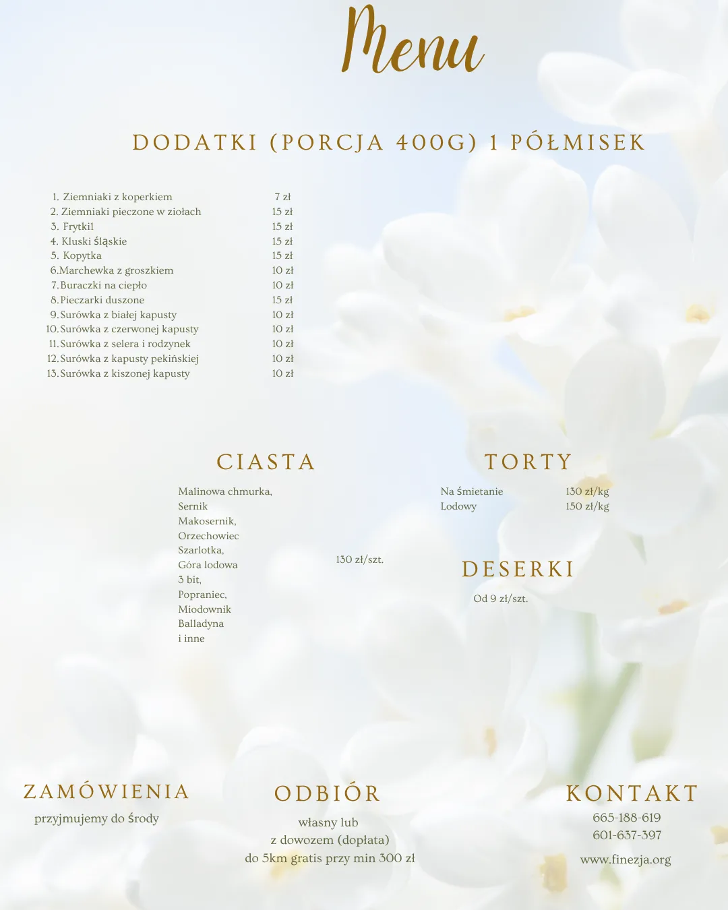
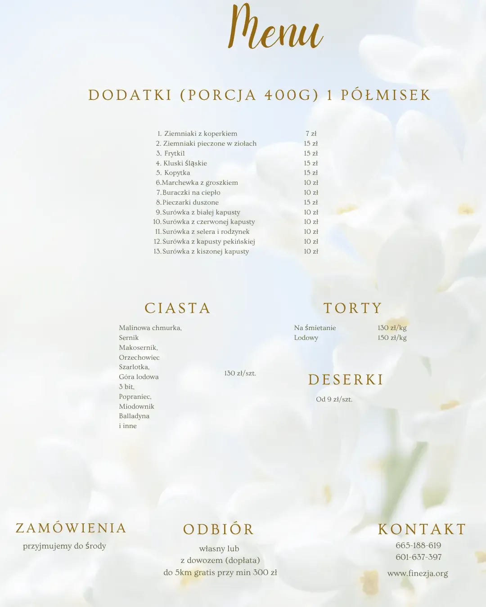

- Strona główna
- Catering Turek
Catering · od 5 do 100 osób
Catering z dowozem – Turek i okolice
Finezja Sala Bankietowa przygotowuje catering z dowozem do domu lub z odbiorem osobistym. Gotowe dania dowozimy na każdą okazję – od kameralnej kolacji dla kilku osób po przyjęcie na 100 gości. Bez gotowania, bez zakupów, bez bałaganu w kuchni.
Zamówienia:
+48 665-188-619
Zaskocz swoich bliskich bądź gości smakiem, którego nie zapomną. Skontaktuj się z nami już dziś!
Catering na każdą okazję
Chrzciny, komunie, urodziny, rocznice, spotkania firmowe, przyjęcia świąteczne – przygotowujemy jedzenie tam, gdzie odbywa się Wasze wydarzenie. Wy zajmujecie się gośćmi, my kuchnią i dowozem.
- Gotowe dania z dowozem – przywozimy w ustalonym terminie, ciepłe i świeże.
- Odbiór osobisty – jeśli wolicie zabrać zamówienie sami.
- Ilość dopasowana do gości – od kilku porcji po duże przyjęcia.
- Menu do wyboru – mięsa, zupy, sałatki, ciasta i torty z jednej karty.
Dowozimy catering nawet na 5 jak i na 100 osób.
Dlaczego catering z Finezji
- Domowa kuchnia, sprawdzone przepisy. Dania, które smakują jak z rodzinnego stołu – i wyglądają dobrze na stole gości.
- Konkretna cena za porcję. Pełny cennik poniżej, bez ukrytych dodatków.
- Dowozimy od kilku do 100 osób. Kameralne spotkanie czy większe przyjęcie – tak samo dopięte.
- Sala i catering w jednym miejscu. Jeśli organizujecie wydarzenie w Finezji, kuchnię macie po naszej stronie.
- Dojazd z okolic Turku. Dowozimy lokalnie – Turek i okolice do 40 km.
Menu cateringowe
Mięsa i dania główne
Zadzwoń do nas
Chcesz zamówić gotowe porcje na imprezę….
Zupy
Ciasta
Torty
Mięso wędzone
Sałatki 500 g
Jak zamówić catering
- Zadzwońcie lub napiszcie. Podajcie datę, liczbę gości i okazję.
- Wybierzcie menu. Doradzimy, ile porcji realnie wystarczy.
- Ustalamy dowóz. Godzina i miejsce – tak, żeby jedzenie dotarło na czas.
- Odbieracie lub przywozimy. Gotowe, ciepłe i świeże.


Jaka jest minimalna wartość zamówienia?
Przy dowozie przyjmujemy zamówienia od 200 zł. Przy mniejszych zamówieniach możliwy jest odbiór osobisty – zadzwońcie, ustalimy szczegóły. Duże przyjęcia (do 100 osób i więcej) wyceniamy indywidualnie.
Jak szybko mogę zamówić catering?
Standardowo realizujemy zamówienia z 3-dniowym wyprzedzeniem. Przy większych przyjęciach ( wesela, imprezy firmowe) prosimy o kontakt z większym wyprzedzeniem – im wcześniej, tym większy wybór dań. W pilnych sytuacjach zadzwońcie – jeśli mamy możliwości, przyjmiemy zamówienie krótszym terminie.
Ile kosztuje catering – jak liczycie cenę?
Cena liczona jest za porcję lub jednostkę podaną przy daniu (np. za 1 l zupy, za kg, za blachę ciasta). Pełny cennik znaleźliście wyżej. Do tego dochodzi dowóz: bezpłatny do 5 km, od 5 km do 10km cena 10 zł. Nie pobieramy opłat za przygotowanie ani „ukrytych” dodatków.
Czy dowozicie catering do domu?
Tak. Dowozimy catering do domu na terenie Turku i okolic: Koło, Uniejów, Władysławów, Kawęczyn, Brudzew, Tuliszków. Ustalamy godzinę i miejsce dostawy tak, żeby jedzenie dotarło na czas – ciepłe i gotowe do podania.
Czy mogę odebrać zamówienie osobiście?
Tak. Zamówienie można odebrać w Finezji: od czwartku do niedzieli w Kaczkach Średnich 10c. To dobra opcja przy mniejszych zamówieniach albo gdy chcecie podać dania u siebie w swoim tempie.
Ile dowozicie – na jaką liczbę osób?
Obsługujemy zarówno kameralne spotkania na kilka osób, jak i przyjęcia na 100 gości i więcej. Przy większych imprezach doradzimy, ile porcji realnie wystarczy, żeby nie zabrakło – i żeby nie zostało za dużo.
Czy dowóz jest dodatkowo płatny?
Dowóz na terenie Turku jest bezpłatny przy zamówieniu od 300 zł. Poza Turkiem doliczamy koszt dojazdu – podajemy go przed realizacją zamówienia. Do 5 km dowóz jest bezpłatny
Czy naczynia są w cenie?
Dania dostarczamy w naczyniach porcelanowych – bez dopłaty. Pobieramy za to zwrotną kaucję w wysokości 200 zł.
Jak wygląda menu – czy mogę wybrać dania z różnych kategorii?
Tak. Menu łączy mięsa, zupy, sałatki, wędliny, ciasta i torty – możecie komponować zestaw swobodnie. Doradzimy, żeby dania do siebie pasowały i żeby było ich odpowiednio dużo na Waszą liczbę gości.
Czy podajecie catering na wesela?
Tak. Przygotowujemy catering na wesela, chrzciny, urodziny, rocznice, imprezy firmowe i przyjęcia świąteczne. Jeśli wydarzenie odbywa się w Finezji – sala, kuchnia i obsługa są po naszej stronie. Jeśli u Was – przywozimy gotowe dania.
Jak złożyć zamówienie?
Trzema drogami: telefonicznie: 665 188 619 lub 601 637 397, mailowo: biuro@finezja.org, osobiście: w Finezji, Kaczki Średnie 10c od czwartku do niedzieli. Wystarczy podać datę, liczbę gości i okazję – resztę ustalimy razem.
Jak długo przed wydarzeniem trzeba zamówić tort lub ciasta?
Ciasta i torty przyjmujemy z 4-dniowym wyprzedzeniem. Torty na komunię i wesele warto zamawiać wcześniej – w sezonie terminy szybko znikają
Czy mogę zmienić lub odwołać zamówienie?
Zmiany w zamówieniu przyjmujemy do 7 dni przed dostawą. Przy odwołaniu w krótszym terminie doliczamy koszt przygotowanych produktów – zawsze informujemy o tym z góry.
Czy catering można zamówić na święta?
Tak. Przygotowujemy potrawy na przyjęcia świąteczne i wigilie firmowe. Sezon świąteczny to u nas najbardziej zajęty czas – zamówienia warto składać z wyprzedzeniem. Najpóźniej 7 dni lub do zakończenia zamówień
Jakie opcje menu są zazwyczaj dostępne?
Oferujemy szeroki wybór dań obiadowych, przystawek, sałatek, deserów oraz dań gorących serwowanych w trakcie przyjęcia. Menu jest elastyczne i może zostać dostosowane do charakteru wydarzenia oraz preferencji gości.
Okolicznościowy catering – Turek
Chcesz zorganizować spotkanie z przyjaciółmi, nie tracąc czasu na gotowanie? Postaw na catering z restauracji Finezja zlokalizowanej obok miejscowości Turek. Z przyjemnością przygotujemy dla Ciebie oraz Twoich gości dania z najwyższej jakości składników, które będą zachwycały zarówno smakiem, jak i estetyką podania. Dzięki temu unikniesz spędzania wielu godzin na zakupach, a następnie gotowaniu w kuchni. Korzystając z naszych usług, nie musisz martwić się też bałaganem oraz tym, czy wykonasz wszystko zgodnie z przepisem. Wystarczy, że wybierzesz pozycje z menu dopasowane do indywidualnych preferencji, złożysz zamówienie na catering telefonicznie lub osobiście w naszej restauracji, a my przygotujemy, dostarczymy gotowe, pyszne i świeże dania w wyznaczonym terminie. Poznaj szczegóły, aby przekonać się, dlaczego warto skorzystać z tej opcji!

Catering na każdą okazję
Urodziny, rocznice, chrzciny, komunie, spotkania biznesowe czy przyjęcia świąteczne — na te, jak również szereg innych okazji, nasz catering sprawdzi się wyśmienicie. Dzięki niemu będziesz mógł cieszyć się ważnymi chwilami bez stresu i nerwów związanych z wielogodzinnym przygotowywaniem jedzenia. W praktyce stanowi on wygodną opcję, pozwala na oszczędność czasu oraz zapewnia pełną kontrolę nad jakością posiłków, które przygotowują nasi kucharze z bogatym doświadczeniem w branży. Co więcej, stawiając na catering, jako gospodarz podkreślasz wyjątkowy charakter wydarzenia, a także zwiększasz szanse na to, że będzie udane i pozytywnie zapamiętane przez gości.
Polecane restauracje w Turku — dlaczego wybrać catering z Finezji?
Wymienić można różnorodne restauracje w Turku, wśród których Finezja zdecydowanie wyróżnia się elastyczną ofertą i profesjonalną obsługą. Gwarantujemy bowiem między innymi szerokie menu, w jakim każdy znajdzie dania dla siebie — niezależnie od tego, czy ma alergie pokarmowe, czy jest na diecie wegetariańskiej lub innej. Przygotowujemy catering, uwzględniając wszystkie ważne dla Klienta detale, a także dopasowując ilość potraw do liczby gości. Dzięki temu nasza restauracja w Turku gwarantuje posiłki idealne zarówno na kameralne spotkania, jak i większe przyjęcia rodzinne bądź firmowe. Zapraszamy do kontaktu w celu nawiązania współpracy!
Zamówienia telefoniczne
Zapraszamy do przesyłania zamówień najpóźniej do środy

Zobacz też
Kaczki Średnie 10c · 4 km od Turku
Umów się na obejrzenie sali
Najlepiej zobaczyć Finezję na własne oczy. Zadzwoń lub napisz – pokażemy salę, plener, kuchnię i pokoje, a przy okazji opowiemy, czego nauczyło nas ponad 350 wesel.
665 188 619- Drugi telefon
- 601 637 397
- Adres
- Kaczki Średnie 10c, 62-700 Turek
Do Turku kilka minut, z Konina ok. 30 min, z Kalisza ok. 50 min - Godziny otwarcia
- Pon. 10:00–13:00 · Czw. 9:00–13:00
Pt.–niedz. 9:00–21:00